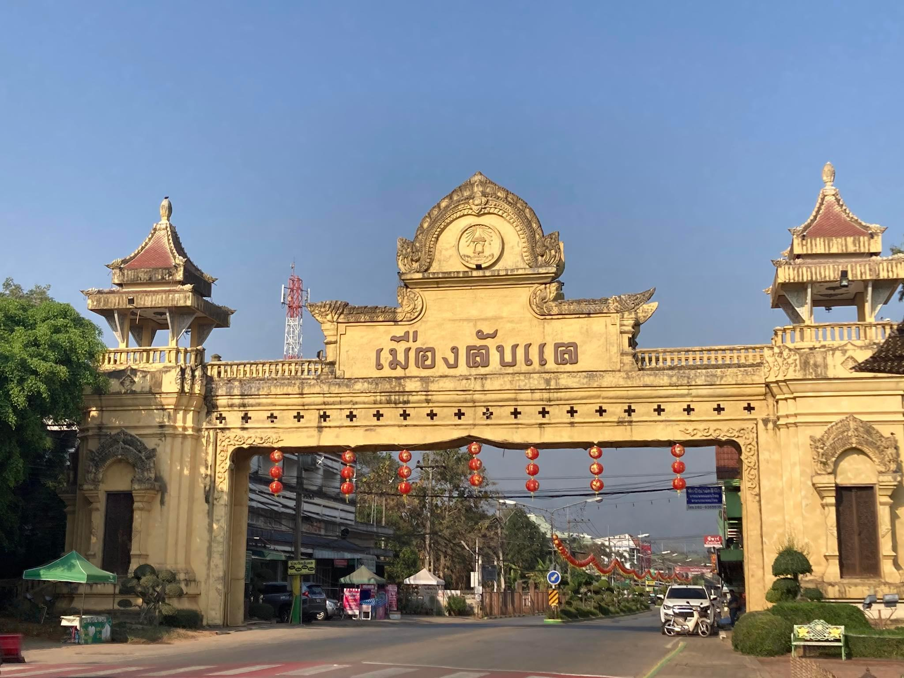
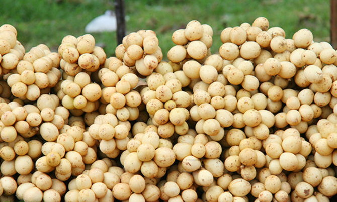

ประวัติเมืองลับแล

อำเภอลับแล เป็นอำเภอหนึ่งในจังหวัดอุตรดิตถ์ เป็นเมืองโบราณมีมาตั้งแต่สมัยก่อนกรุงสุโขทัย พระบาทสมเด็จพระจุลจอมเกล้าเจ้าอยู่หัวได้เคยเสด็จมาเมื่อปีพ.ศ.2444 เมืองลับแลนี้ได้ชื่อลับแลเพราะเป็นอำเภอเล็กๆในจังหวัดอุตรดิตถ์ การที่จะเดินทางไปมามันไม่สะดวก มีเส้นทางที่คดเคี้ยว ทำให้คนที่ไม่ชำนาญทางพลัดหลงได้ง่าย จนได้ชื่อว่าเมืองลับแล ซึ่งแปลว่า มองไม่เห็น แต่ในอีกการเล่าขานหนึ่งก็คือ ในสมัยก่อนนั้น มีภูมิประเทศเป็นป่าเขาสลับซับซ้อน มีบรรยากาศเยือกเย็นแม้ยามพลบค่ำตะวันจะยังไม่ตกดินก็จะมืดแล้ว เพราะมีดอยม่อนฤๅษีเป็นฉากกั้นแสงอาทิตย์ ป่านี้จึงได้ชื่อว่า "ป่าลับแลง" แลง ที่แปลว่า เวลาเย็น ต่อมาเรียกเพี้ยนไปเป็น"ลับแล"ซึ่งก็กลายมาเป็นชื่ออำเภอลับแลในสมัยปัจจุบัน read more...
สินค้าOTOP

ไม้กวาดตองกง ไม้กวาดที่มีชื่อของอุตรดิตถ์ พระศรีพนมมาศ นายอำเภอนักพัฒนาลับแล เป็นผู้ริเริ่มให้ผลิตไม้กวาดชนิดนี้มีจำหน่ายทั่วไปในตัวเมืองและที่อำเภอลับแล อันเป็นแหล่ง ผลิตไม้กวาดชนิดนี้ read more...
อาหาร

ข้าวพันผัก เป็นอาหารที่สืบเนื่องมาจากข้าวแคบแล้วนำมาประยุกต์ให้เกิดสารอาหารเพิ่มขึ้นด้วยการนำผักชนิดต่างๆมาใส่ลงบนแป้งที่อยู่บนปากหม้อ แล้วทำให้สุกก็สามารถรับประทานกับน้ำจิ้มได้เลย read more...
สถานที่ท่องเที่ยว

พิพิธภัณฑ์เมืองลับแล ตั้งอยู่ในอำเภอลับแล จังหวัดอุตรดิตถ์ เป็นศูนย์กลางเผยแพร่ให้ความรู้เกี่ยวกับประวัติศาสตร์ วัฒนธรรม ขนมธรรมเนียมประเพณี read more...
ผลไม้

ลางสาด จากคำบอกเล่าของบรรพบุรุษลับแลว่าลางสาด เป็นผลไม้ตามธรรมชาติมาจากต่างถิ่น แถบแหลมมลายู ภาคใต้ของไทย มีนายพรานเข้าป่าล่าสัตว์ พบนก หนู ค้างคาวและสัตว์ป่าต่างๆเก็บผลกิน นายพรานจึงทดลองกินบ้าง ติดใจในรสชาติและเห็นว่าไม่เป็นอันตรายจึงเก็บผลและเมล็ด มาปลูกในบ้าน ต่อมาได้แพร่ขยายพันธุ์ในหมู่เพื่อนฝูง ญาติพี่น้องทั่วไป read more...